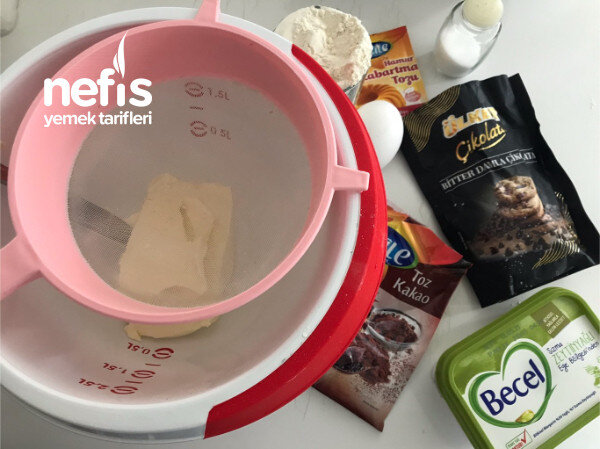
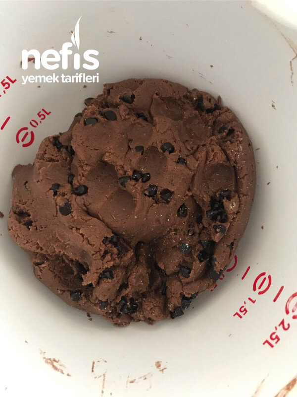
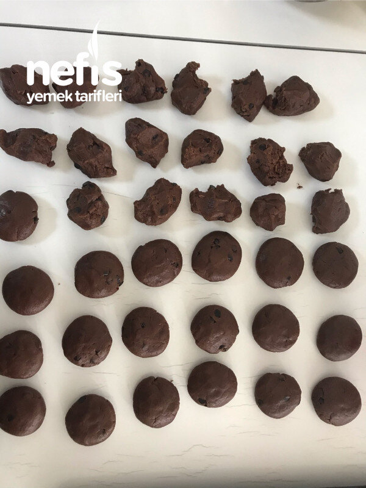
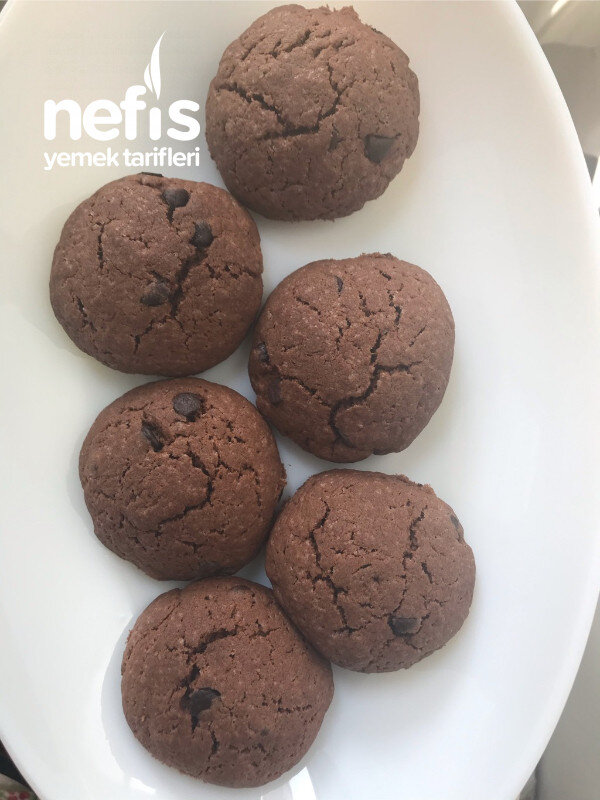

Kakaolu Kurabiye (Amerikan Cookies)
2021-03-22
← Tüm tarifler

🍽️ 12-14 kişilik
⏱️ Hazırlık: 20 dk
🔥 Pişirme: 25 dk
🏷️ Kurabiye Tarifleri
Malzemeler
250 gram margarin ya da tereyağı
1 yumurta
1 bardak şeker
3 kaşık kakao
Çay kaşığının ucuyla tuz
1 paket kabartma tozu
Yarım bardaktan fazla damla çikolata veya diğer çikolatalardan keserek kullanılabilir
3- 3.5 bardak un
İstenirse vanilya
Hazırlanışı
Oda sıcaklığındaki margarin veya tereyağı, şeker, yumurta istenirse vanilya karıştırılır.
Un, tuz, kakao elenerek karıştırılır.
Unlu karışım diğer karışıma yavaş yavaş ilave edilir.
İçerisine çikolatalar da ilave edilir( istenirse fındık vs. De ilave edilebilir.
Elde edilen hamur 20-30 dakika kadar buzdolabında dinlendirilir.
Dinlenen hamuru ben 36 bezeye böldüm.
Yuvarlayıp biraz yassıltılır.
Isıtılmış fırında175- 180 derecede 25 dakika kadar kontrol edilerek pişirilir.
Soğuyunca servis yapabilirsiniz. Afiyet olsun 😊.
Fotoğraflar


